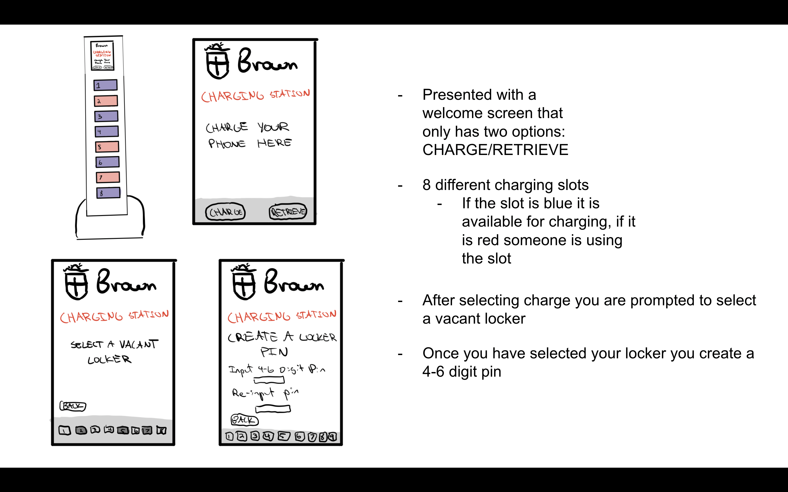
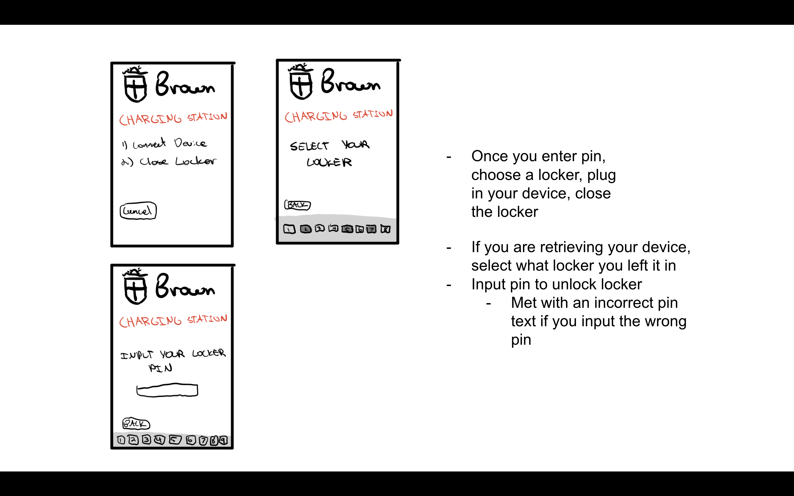
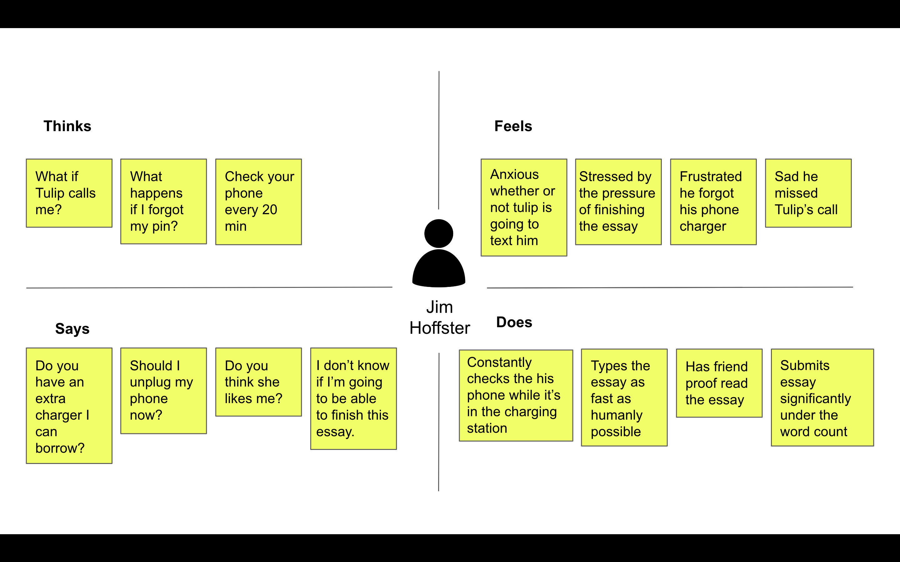
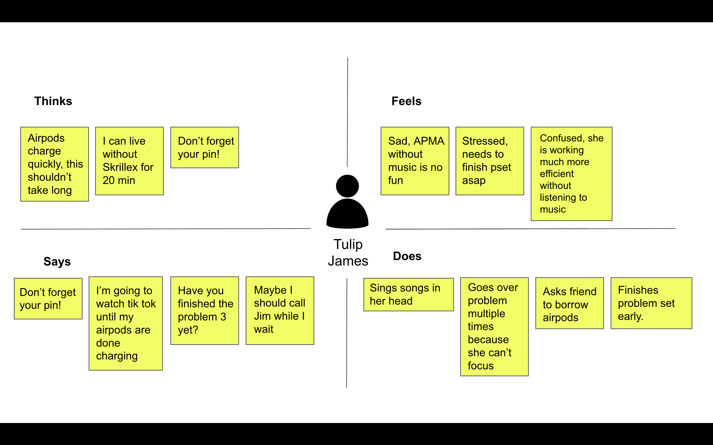

To deepen my understanding of users interactions with interfaces I studied how they interact with the charging station in the science library (sci li) at Brown University.
Observations and Interviews


Observations
Very quick interaction with interface - enter pin in as fast as possible and approach with device in hand
When retreiving device almost always correctly enter pin on the first try
Choose the highest open port on the charging station
Do not leave device in charging station for very long
Normally use charging station for phone, but a couple people used it for airpods
Interview Questions
Do you write down the pin?
Generally do not, it's only four digits, easy to memorize
How often do you use the charging station?
Very rarely, normally bring a charger from dorm
Do you think the charging station needs to lock?
Mixed answers, some were adament about locking the charging station, others argued it isn't necessary
Should the charging station be expanded to support laptop charging?
This is unnecessary, you need your laptop to do work
Do you know what to do if you forget your pin?
Mentioned seeing a help button in the interface, but not sure what the next steps would be
Personas


Jim is an undergraduate student at Brown University studying computer science, and he has a midterm essay due in 2 hours! In a rush to the sci li to complete his philosophy essay he forgot his phone charger. The charging station does not allow Jim to check his phone while in use. How will he know if his crush Tulip calls him, or the internship he applied for responded?
Students spend countless hours in the Sci-Li and many of these students do not live close enough to quickly run back to their dorm if they forgot something necessary to their study without messing up their workflow.
While most students remember their charging cords there is certainly a subset of students who forget (including myself).
Tulip is an undergraduate at Brown University studying Applied Mathematics. Tulip always listens to music while doing homework because it keeps her motivated and her vibes up.
She lives in New Pembroke which is a trek from the sci li. Her airpods just died and she only brought one charger which is currently being used by her phone. Music is a necessity for APMA problem sets. None of her friends have an extra charger so she is going to have to use the charging station in the basement of the sci li.
Nowadays you need to carry around at least three chargers to be able to charge all of the devices you want to use while doing work - ipad, iphone, laptop, airpods, etc… and sometimes you might forget a charger, or it is more convenient to use the charging station.